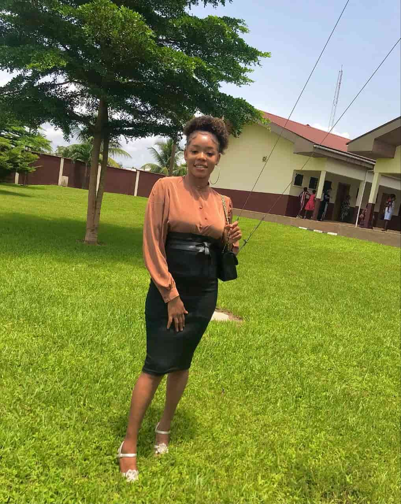

Chinweokwu Clementina Adindu | WDD 130
Hello! My name is Chinweokwu Clementina Adindu, but you can call me Tina. I am from Isialangwa North in Abia State, Nigeria, currently based in Onitsha, Anambra State. I hold a B.Sc. in Food Science and Technology from Michael Okpara University of Agriculture, Umudike, in October 2024. I have professional experience working as a Sales Representative at Cikem Veterinary Clinic, where I developed strong skills in customer relations and inventory management. Before that, I worked as a Computer Graphics Designer and a Cashier Representative, which helped me gain creativity, communication, and organizational skills. I am passionate about technology and software development and currently learning full-stack development to become a proficient web developer. Beyond academics and work, I enjoy reading, problem-solving, and contributing to my church and community. My goal for the next year is to improve my programming skills, work on real-life tech projects, and prepare for a successful career while maintaining a balanced personal life.